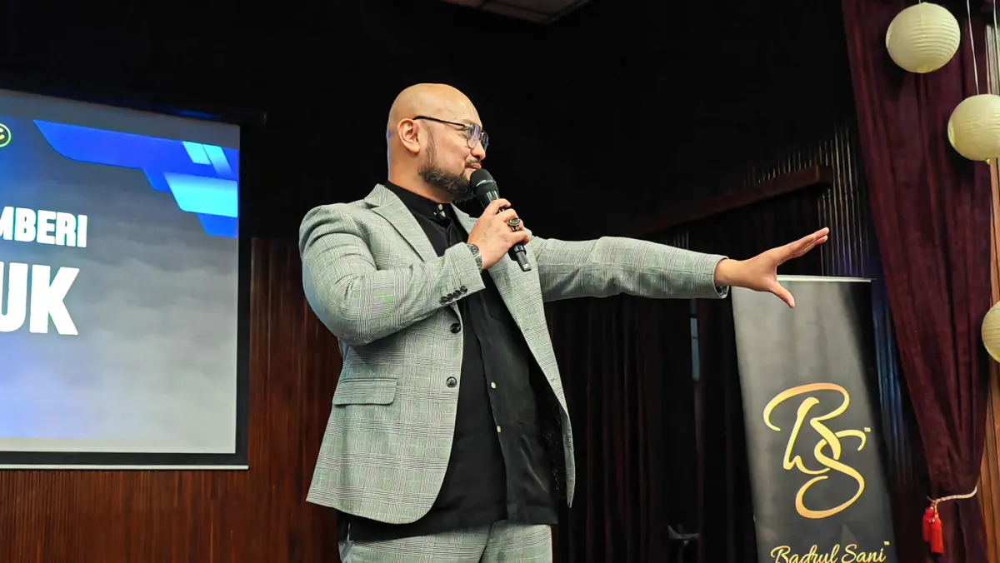
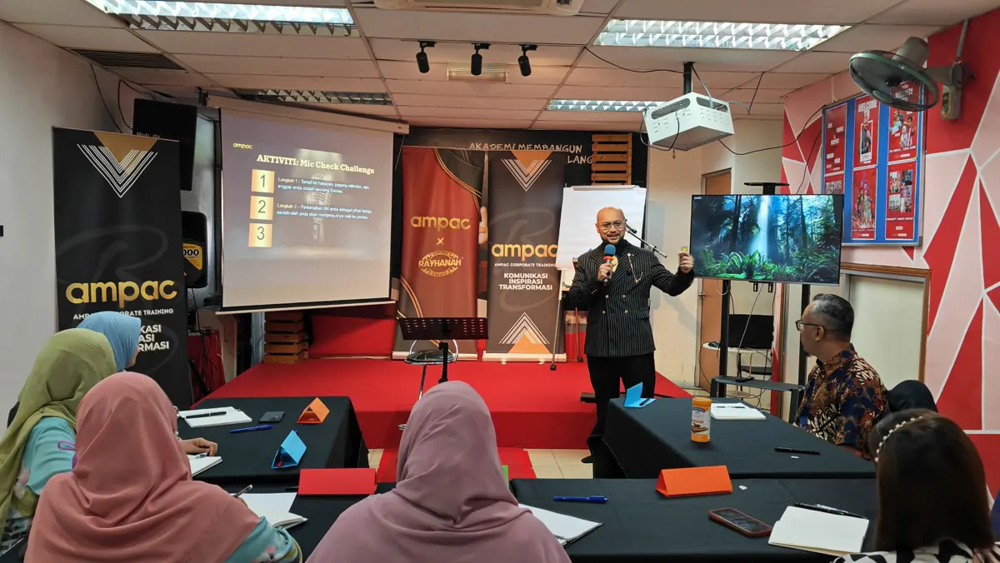

“Team perlukan training… tapi training apa?”
Mulakan dengan contoh kerja dan jurang prestasi, kemudian teliti sama ada isu melibatkan kemahiran, proses atau persekitaran.
Untuk HR, L&D & Ketua Pasukan
MOVE YOUR TEAM
Bina Training Needs Analysis (TNA) dengan AI, sediakan cadangan untuk dibentang kepada management, kemudian susun pelan tindakan dan timeline gerak kerja. Semuanya dalam satu pagi.
Apa yang perlu dibawa: laptop, sambungan internet, akaun ChatGPT atau Gemini, dan satu isu kerja sebenar. Gunakan contoh tanpa nama, bukan maklumat sulit.

Cabaran sebenar HR
Merancang program ialah permulaan. Menghubungkannya dengan masalah kerja, sokongan penyelia dan bukti perubahan ialah langkah seterusnya.
Mulakan dengan contoh kerja dan jurang prestasi, kemudian teliti sama ada isu melibatkan kemahiran, proses atau persekitaran.
Hubungkan cadangan dengan kesan pada kerja, sumber yang diperlukan dan ukuran yang boleh disemak.
Tentukan pemilik tindakan, peluang mengamalkan kemahiran dan tarikh semakan bersama penyelia.
Datang dengan satu cabaran.
Pulang dengan satu pelan tindakan.
Hasil yang anda bina
Dengan bantuan AI, anda membina tiga draf hasil daripada satu isu sebenar. Semak bukti dan sesuaikan cadangan dengan keperluan organisasi.
Analisis awal jurang prestasi, kemungkinan punca dan cadangan latihan atau sokongan kerja yang perlu disahkan.
Cadangan satu halaman, rangka lima slide, skrip pitch dua minit dan persediaan menjawab soalan superior.
Tugasan, cadangan PIC, tarikh mula dan siap, kebergantungan serta bukti kemajuan. Tempoh mengikut keperluan pelan.
Contoh rekaan ringkas. Timeline contoh boleh disesuaikan; bukan tempoh wajib 30 hari. Pelan sebenar bergantung pada input, kelulusan dan semakan organisasi.
Agenda
Belajar dengan membuat. Setiap sesi berakhir dengan satu output yang anda bawa pulang.
Aturcara tentatif; boleh dilaraskan sedikit oleh pengajar mengikut dinamik kumpulan.
Tetapkan isu kerja yang akan dikerjakan sepanjang sesi dan semak akses ke AI.
Diagnosis berpandu: isu, siapa terlibat, contoh dan hasil yang diingini. Guna AI meneliti kemungkinan punca, dan bezakan keperluan latihan daripada isu proses atau sokongan kerja.
Latihan & semakan: cadangan satu halaman, rangka lima slide, skrip pitch dua minit dan persediaan soalan management.
Pitch & tindakan: susun tugasan, PIC, timeline, hasil kerja dan tarikh semakan bersama penyelia.
Setiap peserta menyatakan satu tindakan pertama untuk minggu depan.
Tiga langkah bersama AI
Daripada “kita perlukan training” kepada cadangan yang mempunyai tujuan, pemilik dan cara semakan.


Imej pada bahagian ini ialah visual ilustrasi yang dijana AI.

Belajar dengan membuat
Pilih satu isu bagi seorang pekerja, kumpulan kecil atau satu jabatan. Kekalkan skop yang jelas sepanjang latihan.
Bezakan perkara yang sudah diketahui daripada perkara yang masih perlu disahkan.
Semak draf TNA dan latihan yang dicadangkan; perjelas maklumat yang masih belum diketahui.
Terangkan cadangan dengan jelas dan tentukan apa yang berlaku selepas program.
Yuran penyertaan
seorang · sesi 3.5 jam · 3 Disember 2026
Makluman: program ini tidak boleh dituntut di bawah HRDC (HRDF).
Bersama orang yang turun melatih
Tuan Hj Badrul Sani · Master Trainer AMPAC | Speaker | Author | TV & Radio Celebrity
Abg Badr ialah Master Trainer dan Professional Speaker yang mengetuai pembangunan modul serta penyampaian utama AMPAC Corporate Training. Gayanya santai tetapi berimpak: humor, cerita, analogi visual dan strategi praktikal yang dekat dengan cabaran manusia di tempat kerja.
Suara peserta
Di dalam bilik latihan
Gambar sebenar daripada pelbagai sesi latihan bersama Abg Badr. Klik gambar untuk melihat dengan lebih dekat.
Galeri ini menunjukkan pengalaman latihan Abg Badr; bukan dokumentasi khusus program MOVE YOUR TEAM.
Siapa yang patut sertai?
Jika tugas anda melibatkan pembangunan pasukan dan komunikasi organisasi, mulakan dengan cabaran yang sedang anda hadapi.
Pegawai yang merancang latihan dan perlu menjelaskan kaitannya dengan keperluan organisasi. Anda pulang dengan TNA, bahan pitch dan pelan tindakan.
Pemimpin yang mahu memberi arahan, feedback dan bimbingan dengan lebih jelas, serta menilai sama ada masalah pasukan memang perlu training.
Fasilitator yang mahu menghubungkan sesi latihan dengan amalan kerja selepasnya.
Langkah seterusnya
Isi borang dan WhatsApp akan terbuka dengan mesej pendaftaran yang siap ditulis. Kaedah bayaran dan pengesahan tempat dimaklumkan selepas itu.
Pertanyaan program · Penyertaan individu · Keperluan organisasi. Mahu bawa program ini ke organisasi anda? Lihat AMPAC Corporate Training.